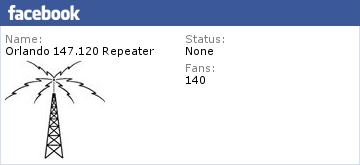

HOME
Facebook Like and Signup page
Welcome to the
forum
for the Orlando
147.120
repeater.
Orlando 147.120 Repeater

The Orlando 147.120MHz repeater
Orlando 147.120 Repeater
Follow @147120_repeater
Revised: Sunday, February 17, 2019 at 12:22:03 PM (EST)